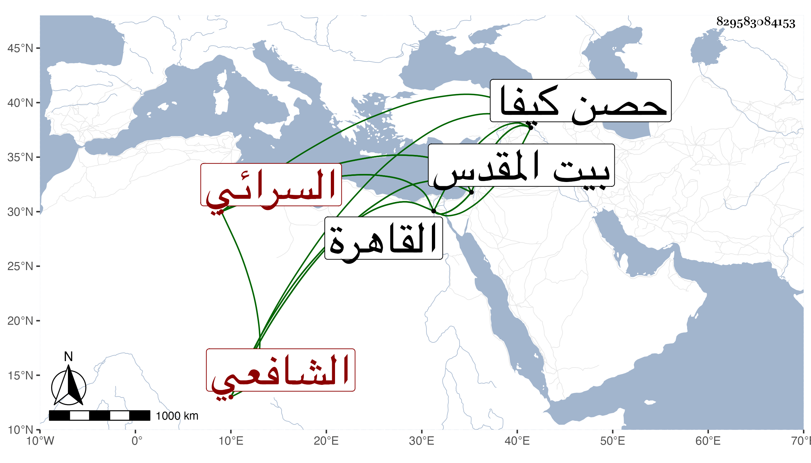

0902Sakhawi.DawLamic.ITO20230111-ara1.EIS1600.829583084153
Biography ID: 829583084153
1265
يوسف بن محمد بن يوسف بن الحسن بن محمود العز بن الجلال بن العز السرائي الأصل التبريز الشافعي نزيل القاهرة والماضي أبوه وجده ويعرف كسلفه بالحلوائي . ولد سنة سبع عشرة وثمانمائة بمدينة حصن كيفا ونشأ بها فأخذ عن أبيه وغيره وقدم القاهرة مرارا أولها صحبة أبيه في سنة أربع وثلاثين ولقي إذ ذاك شيخنا وغيره ثم لما كان الأمير أزبك الظاهري مقيما ببيت المقدس لازمه وانتمى إليه بحيث صار من خواصه وكذا صحب الخطيب أبا الفضل النويري ولازمه وقرأ بين يديه بجامع الأزهر ، وكان أصيلا فاضلا لطيف العشرة ظريفا له نظم ونثر لقيته مرارا وسمعت من نظمه أشياء منها قوله :
| وناحت حمامات الرياض بحرقة | فخلت قلوب العاشقين ممزقه |
وجعله بدل ثاني الأبيات المنسوبة للزمخشري وهي :
| تغنت على فرع الأراك مطوقة | فردت خليات القلوب مشوقه |
| وأشوق منها صوت حاد مبكر | حدا بحدوج المالكية أينقه |
| تخالف ما بيني وبين أحبتي | فلي عندهم مقت وعندهم لي مقه |
مات في أوائل ذي الحجة سنة ثلاث وسبعين ببيت المقدس رحمه الله .
